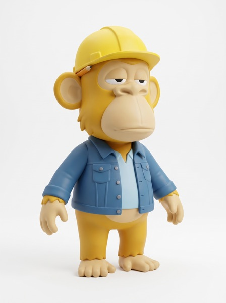
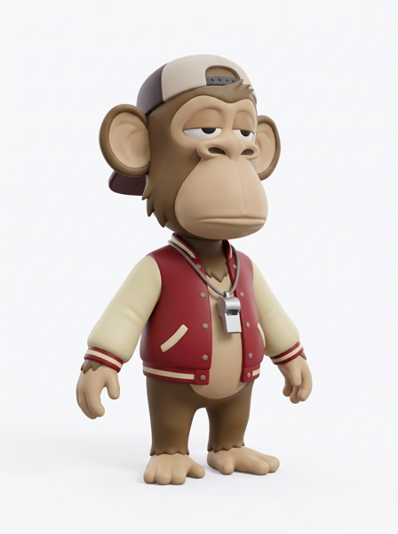
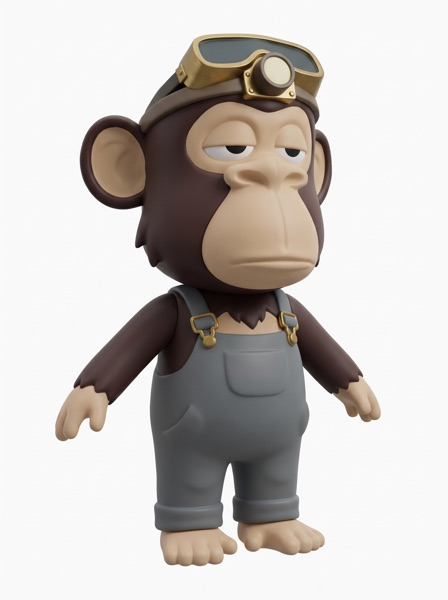
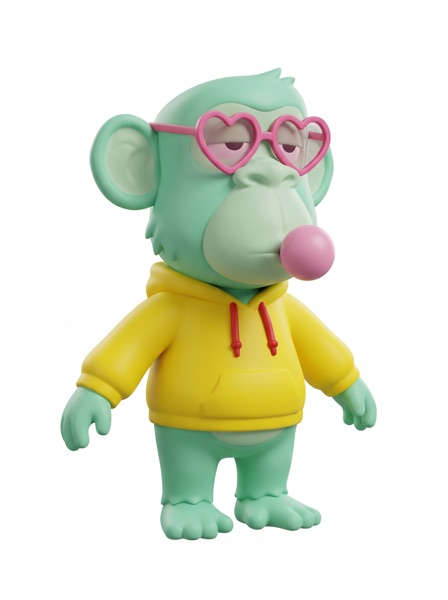
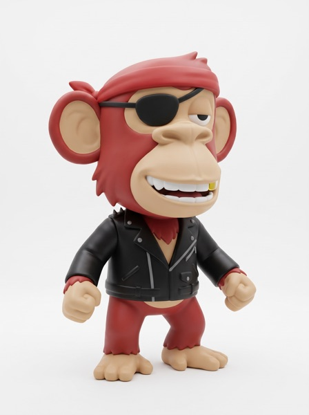
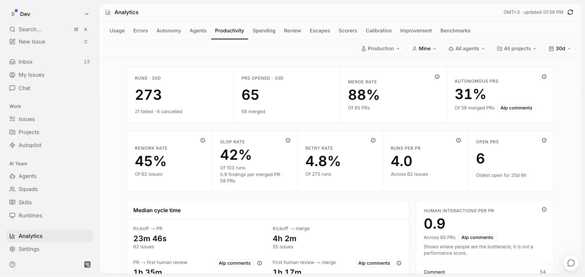
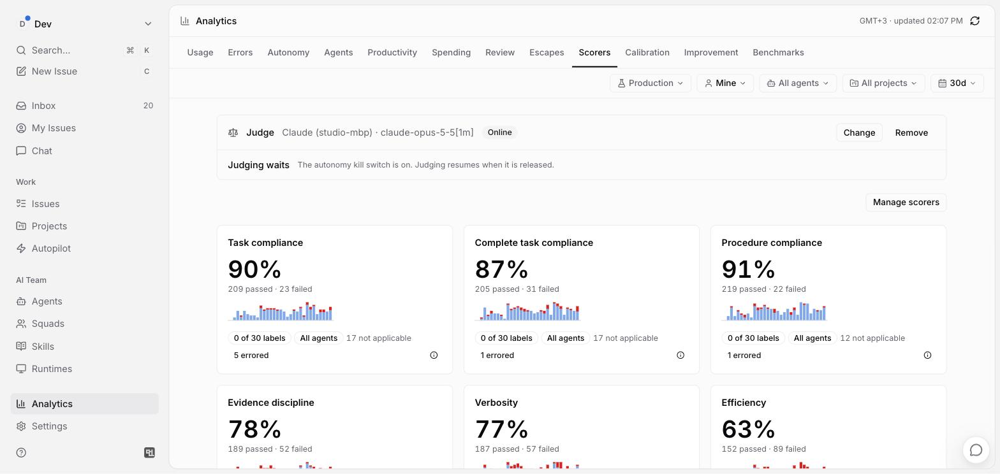
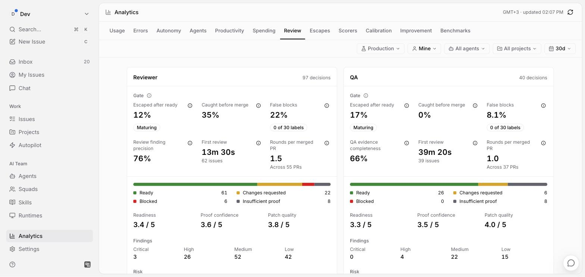
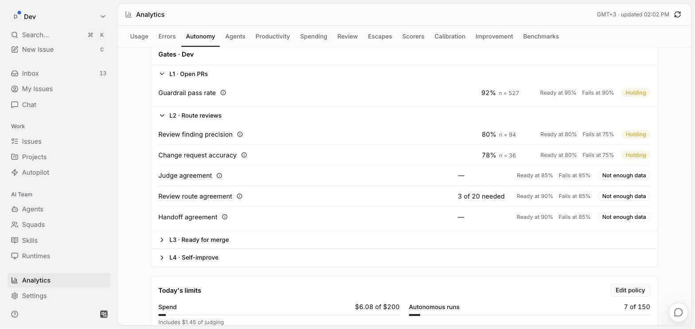

One board · many agents · one team
Keep the work moving.
Keep the merge human.
Alp gives people and AI coding agents one shared board to plan, build, review and hand work back.
-
01 · Intake
An issue lands on the table.
From your backlog, a Jira ticket or an autopilot schedule. It gets an owner the moment it lands, a person or an agent.
-
02 · Architecture
Agents map the impact and write the plan.
system-architect finds where the change spreads. software-architect turns it into a spec and tasks. You approve the plan before any code is written.
-
03 · Delivery
The work splits across parallel lanes.
delivery-lead hands tasks to backend-engineer and frontend-engineer. Each lane is a run on your own machine, up to 20 at once per daemon.
-
04 · Review
Review sends it back once, with the finding.
reviewer writes a structured verdict and qa-breaker tries to break it. Changes requested? The card goes back to Delivery with the finding in its handoff note.
-
05 · Merge
A person presses the seal.
A ready verdict, green CI and a reviewed head send you one notice. Alp never merges on its own, at any autonomy level.
The team
Nine agents and a person. One board.
Agents pick up the issue, pass it along and send it back when it isn't right. You come in twice: to approve the plan and to merge.
Loading the team
- system-architect

software-architect
delivery-lead
backend-engineer
frontend-engineer- reviewer
- ponytail

qa-breaker- sre-oncall
- 01An issue lands in Backlog
- 02system-architect maps the impact, software-architect writes the plan
- 03You approve the plan
- 04delivery-lead hands it to backend-engineer
- 05backend-engineer builds it and opens the PR
- 06reviewer requests changes, ponytail writes one line
- 07Fixed, broken on purpose by qa-breaker, checked by sre-oncall
- 08Ready to merge. You merge.
Squads
Squads pass the baton.
A squad is a team of agents with a leader and a routing rule. Handoffs happen by @mention on the issue, so every step leaves a comment anyone can read later.
-
Station 1
Architecture
Where does this change spread, and how do we build it?
- system-architect lead
- software-architect
-
Station 2
Delivery
Split the plan by repo and surface, write the code, run the tests, open the PR.
- delivery-lead lead
- backend-engineer
- frontend-engineer
-
Station 3
Review
A machine-readable verdict with a risk score, then an adversarial pass that adds tests, never production code.
- reviewer lead
- qa-breaker
Skills are instructions any agent in the workspace can use.
- api-and-interface-design
- code-review
- codebase-design
- debugging-and-error-recovery
- deprecation-and-migration
- diagnosing-bugs
- domain-modeling
- ci-cd-and-automation
Analytics
The table keeps score.
Every run is measured: what it cost, what it shipped, how often review sent it back and where people are the bottleneck. You raise autonomy when these numbers are ready, not before.
Is the team shipping?
- Merge rate
- PRs opened by agents that a person merged.
- Autonomous PRs
- Merged PRs no person had to touch before review.
- Rework and slop rate
- How often work came back, and how many findings each merged PR carried.
- Human interactions per PR
- Where people are the bottleneck. Not a performance score.
Is each run any good?
- 29 scorers
- Task compliance, evidence discipline, scope creep, tool loss, code quality and more, on every run.
- Calibrated judge
- An LLM judge you check against human labels before you trust it.
- Guardrails
- A run that misses one gets one retry, with the judge’s findings in its handoff note.
Is review catching things?
- Caught before merge
- Defects review found while the PR was still open.
- Escaped after ready
- Defects that got past a ready verdict and were reverted or reopened.
- False blocks
- Changes requested that a person later overruled.
- Verdict mix
- Ready, changes requested, blocked and insufficient proof, per reviewer.
Is the next level ready?
- Readiness gates
- Each level has thresholds, such as guardrail pass rate ready at 95% and failing at 90%.
- Today’s limits
- Spend and autonomous runs against the daily cap, judging included.
- Ledger
- Every autonomous action, allowed or held, with its reason.




- Usage
- Errors
- Autonomy
- Agents
- Productivity
- Spending
- Review
- Escapes
- Scorers
- Calibration
- Improvement
- Benchmarks
Quality loop
A failure comes back once. A pattern comes back as a fix.
Every change is attacked, checked and judged before a person decides.
-
01 Brief LiveTarget · in-app intake
The ticket becomes a brief.
Acceptance criteria, every comment in order and the screenshots on the ticket. The last comment beats the description.
- brief.json
- KK-01 · KK-02 · KK-03
- claims to verify
-
02 Deploy gate Live
Test the head, not a guess.
The preview has to run the pull request head before anything is judged. If it can’t be proven, the result is unmeasurable, never a pass.
- deploy gate: open
- pr_head = image
-
03 Breaker Live
qa-breaker tries to break it.
The fix preview and a control run side by side at 375, 390, 768 and 1280. A layout scan, Midscene and a pixel diff hunt for what got worse.
- layout-scan
- aiBoolean → false
- verdict.json · fail
A Midscene claim never passes alone. It needs a screenshot.
-
04 On call Live · prod alarmsTarget · per PR
The detective checks the runtime.
sre-oncall reads the 5xx and restart signals. HolmesGPT offers a hypothesis, and it only counts once promq confirms it.
- 5xx rate
- restarts / OOM
- promq confirms
-
05 Review Live
One verdict. One line.
The reviewer rules with a risk score and the proof behind it. Ponytail says nothing and writes one line.
- changes_requested
- Risk: High (62/100)
- not_merge_ready
Rejections 1 of 2. At 2, a person decides.
-
06 Retry Live · off by default
A failure comes back once.
The findings travel back as a handoff note. On the new head, each old finding is checked again and marked resolved.
- handoff note · 3 findings
- retry 1 of 1
- resolved 3/3
-
07 Pattern Live · first halfTarget · auto validation
A pattern comes back as a fix.
Twenty failures with one root cause become an improvement issue. The fix is one edit to one instruction, and it has to beat the benchmark. A person starts the validation.
- criterion_not_exercised
- agents/qa-breaker.md
- held-in ✓ held-out ✓
-
08 Merge Live
A person merges.
ready becomes ready_to_merge, and you get one notice. You press merge. Alp never does.
- ready_to_merge
- merged by a person
Quality loop
A failure comes back once. A pattern comes back as a fix.
01 Brief · Live
The ticket becomes a brief.
Acceptance criteria, comments in order and the attached screenshots.
02 Deploy gate · Live
Test the head, not a guess.
No proven preview means unmeasurable, never a pass.
03 Breaker · Live
qa-breaker tries to break it.
Fix and control at 375, 390, 768 and 1280: layout scan, Midscene, pixel diff.
04 On call · Live / Target
The detective checks the runtime.
A HolmesGPT hypothesis counts once promq confirms it.
05 Review · Live
One verdict. One line.
changes_requested · Risk: High (62/100). Ponytail writes one line.
06 Retry · Live
A failure comes back once.
Findings return as a handoff note and get marked resolved.
07 Pattern · Live / Target
A pattern comes back as a fix.
One edit to one instruction, proven on the benchmark.
08 Merge · Live
A person merges.
ready_to_merge, one notice, your click. Alp never merges.
Autonomy
Autonomy is a switch you own.
Owners and admins set the level for the workspace, a project or a single agent, and the lowest one wins. Every task starts manual until someone marks it Autonomous. Metrics say when a level looks ready. They never move it.
Defaults. Change the numbers, not the limit. A person always merges.
Everywhere
Connected to the tools already on your table.
- GitHub
- Bitbucket
- GitLab
- Gitea
- Forgejo
- Jenkins
- Jira
- MCP servers
- Web
- Desktop app
- Mobile
- CLI and daemon